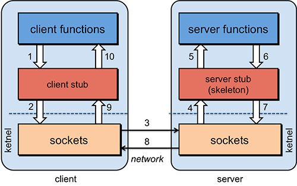
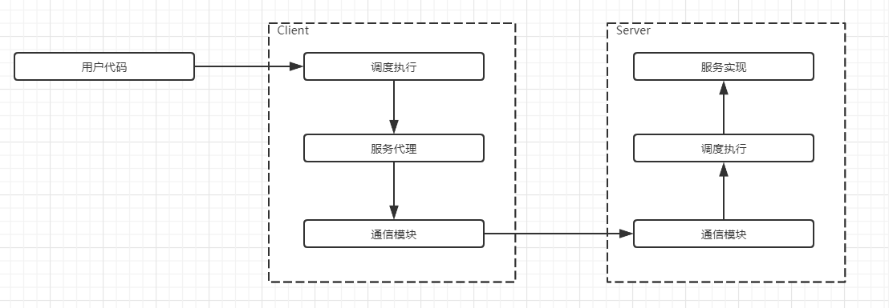
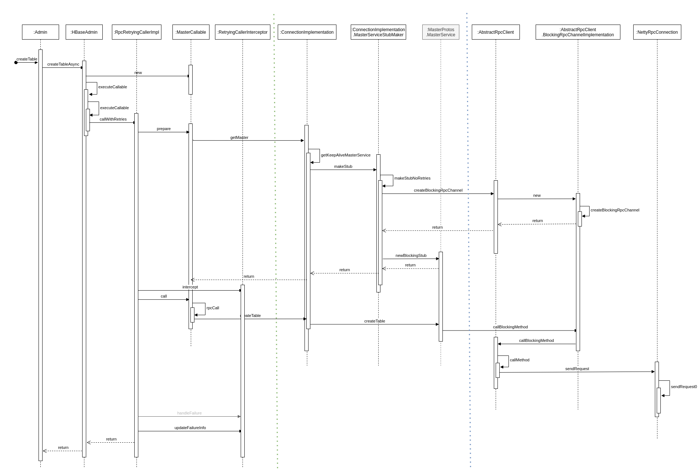
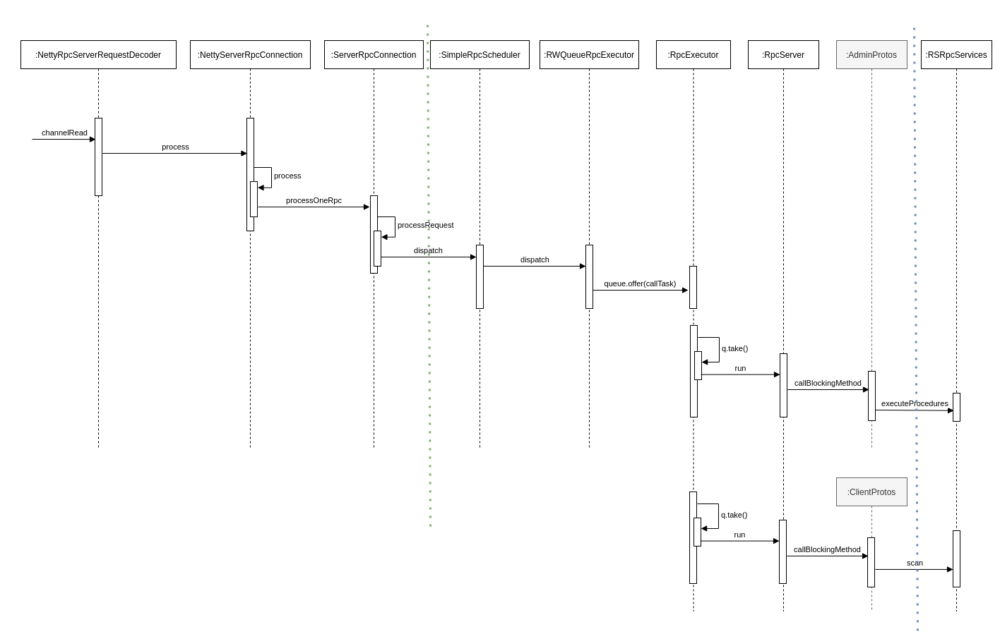
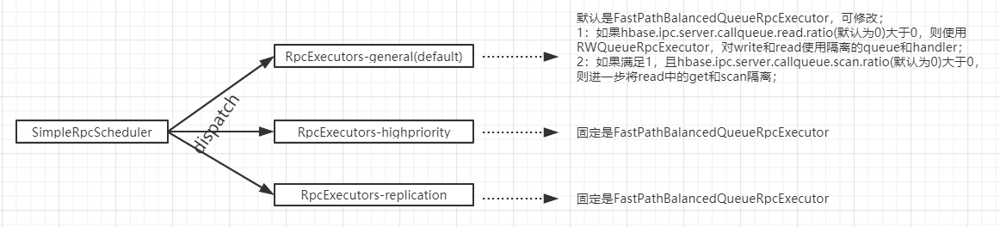
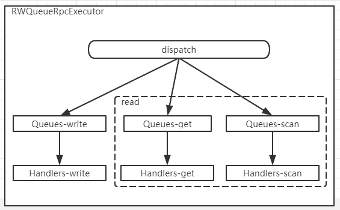
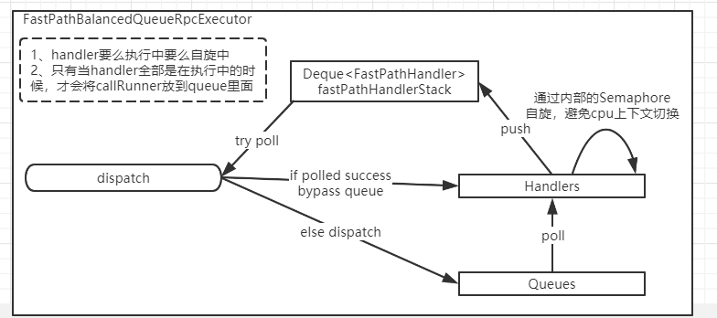

引入RPC
RPC的基本概念
RPC（Remote Procedure Call）远程过程调用，它是一种技术思想，而非规范或者协议。从效果上来看，A节点应用可以像调用本地方法一样调用B节点服务的方法。为了达到这样的目的，需要解决通讯问题，序列化和反序列化问题，寻址问题等等。

上图中的Stub类似于一个代理，一般的使用方法是response = stub.scan(controller, request)，比如在A节点的应用中使用stub.scan(...)实际上调用的就是B节点上指定服务的方法。
RPC的实现需要解决序列化和反序列化问题，在日常的开发中，这一块借由protobuf定义的message实现；寻址问题则借protobuf定义的service实现；通讯问题借助Netty实现。
RPC涉及到的模块说明
HBase整个RPC框架实现逻辑较为繁琐，不过依旧没有偏离上述的实现逻辑。
RPC操作的RPC消息结构
HBase RPC操作的流程介绍

HBase Client的流程

上图的流程被绿色和蓝色的线分割成了三部分，最左边的一部分完成了调度执行的功能，中间的部分完成了服务代理的功能，最右边的部分完成了通信模块的功能。
调度执行
该模块主要提供接口转换、错误重试、服务分组等能力；
- 接口转换
服务层定义的服务接口与用户层不同，比如put/delete/increment/append等操作底层都是调用的mutate接口，而batch相关的操作，无论是读还是写都调用multi接口；
转换逻辑封装为一个Callable对象，交由RpcRetryingCaller处理；
- 错误重试
RpcRetryingCaller负责与服务代理模块直接交互 ，以及错误时的重试；
- 服务分组
batch相关的操作可能会涉及到多个RegionServer，需要按照RegionServer进行分组，然后多线程并发请求，这些逻辑是在AsyncProcess中；
对于非batch类请求则直接使用RpcRetryingCaller进行调用，AsyncProcess的内部实际上也是依赖了该类来执行单个RegionServer请求；
服务代理
服务代理实现了与服务端同样的接口； 对调度执行模块而言，调用stub的方法就相当于调用远程的服务，而不必关心实现细节；
这部分依赖protobuf组件，通过在proto文件中定义service及message类型的参数，可直接生成接口和stub实现类；
在ConnectionImplementation类中有一个Map类型的stubs变量，其key为service name + regionserver，value则是stub实例；
通信模块
该模块主要进行序列化和io处理；
目前HBase已采用netty作为底层的io框架，客户端的核心类为NettyRpcClient；
服务代理层的stub类中含有一个BlockingRpcChannel类型的变量，而rpcClient通过实现该接口并将实例注入来与之对接；
序列化则是依赖protobuf组件，序列化与反序列化的逻辑都放在NettyRpcDuplexHandler中，该类注册在netty的pipeline，会基于不同的事件自动调用；
HBase RegionServer的流程

BlockingQueue<CallRunner> q = new LinkedBlockingQueue<>()
上图的流程被绿色和蓝色的线分割成了三部分，最左边的一部分完成了通信模块的功能，中间的部分完成了调度执行的功能，最右边的部分完成了无复实现的功能。
通信模块
该模块主要负责数据的读取、反序列化并封装为call对象；
核心实现类为NettyRpcServer，通过在pipeline中注册的一些handler来完成上述处理；
调度执行
通信模块得到的call对象会交由rpcScheduler进行调度，目前默认实现为SimpleRpcScheduler；
rpcScheduler的主要作用是根据请求类型把请求分配给不同的rpcExecutor实例，请求类型有3种：普通请求、高优先级请求和replication请求，而rpcExecutor的实现目前主要由RWQueueRpcExecutor和FastPathBalancedQueueRpcExecutor两种，不同的类型使用了不同实现，关系如下：

RWQueueRpcExecutor的特点是内部可以对读写隔离，以及对get和scan隔离，所谓隔离的意思是，call对象会放入独立的callQueue，并使用独立的handler进行处理；
服务实现
服务端实现类需要实现一些接口，例如AdminService.BlockingInterface、ClientService.BlockingInterface、MasterService.BlockingInterface等；
HMaster的服务实现类主要是MasterRpcServices，HRegionServer的服务实现类主要是RSRpcServices；
service相关的类会在启动阶段进行初始化，然后在请求处理时根据connection的serviceName获取到对应的service实例，再根据call对象的method和param进行方法的调用；
HBase Master的流程
Master做为一种特殊的RegionServer，整个流程与RegionServer类似，唯独不同的是服务实现类不同，Master的实现类是MasterRpcServices。
Reference
附件
RWQueueRpcExecutor

RWQueueRpcExecutor的特点是内部可以对读写隔离，以及对get和scan隔离，所谓隔离的意思是，call对象会放入独立的callQueue，并使用独立的handler进行处理；
FastPathBalancedQueueRpcExecutor

FastPathBalancedQueueRpcExecutor不支持隔离，其特点是对于空闲的handler，让其自旋而不是阻塞，以减少线程上下文切换的消耗；